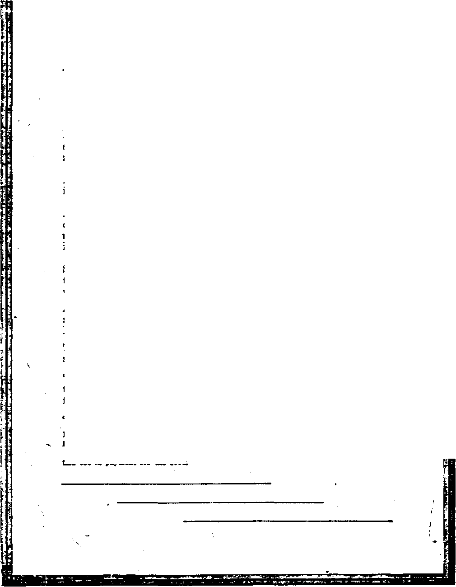

Contents of the Golden Age
Labob and Economics Mines In India
Social and Edccational -Th* Publishing of Facts
Political—Domestic and Eobsion
A Digest of Would News.......
Czecho-Slovakln, Hungary, Russia, Albania Bulgaria, Italy, The Vatican......
772
774
775
790
Greece, Palestine, Armenia, Liberia . . . China, Japan......-......
Philippine Islands, Australia, New Zealand
Conscripting Childhood........
Catholic Influence in Germany . .
Science and Invention Everlasting Life on Earth
Man Living in Abnormal Conditions
Mars Now in Glacial Age..... .
Eternal-Life Prospects for Millions Now
Relative Sizes of Solar System
Tbavkl and Miscellant Golden Rod (Poem)............'
Winds and Stobiis Make Character
Religion and Philosophy Remarkable Feats of Heathen Priests
Jews Punished for Disobedience
Studies nt “The Habf or God"................
PubUsbad every other Wcdnevdey at 18 Concord Street, Brooklyn, N. Y„ U. 3. A, by WOODWORTH. HEDGINGS A MARTIN
Copartner! and Proprietor! dddreu: IS Concord Street, Brooklyn, IT. Y., U. S. A, CLAYTON J. WOODWORTH . . . Editor ROBERT J. MARTIN . BtMiaeee Manaser WM. F. HUDGINGS . . See’y and Treas.
Fira Cents a Corr—*1.00 a Teas Make Rsmittancsb to TH* GOLDBtf SG3
Foaaiaa Omcxn: British.....34 Craves Terrace, Lancaster Gate, London W. 3
Canadian.....« . . . 33-40 Irvin Avenue. Toronto, Ontario
Auttralatian ....... *95 CoUlna Street, Melbourne, Australia South African......0 Leila Street, Cape Town. South AZrlea
Sintered ea oeeond-daaa matter at Brooklyn. N. Y„ under the Act of March 8, 1879
1 ■ -
Veluw V Brooklyn N. Y.. WWaotday, September 10, 1924 Member 130
S—===_===^==========—======6=========aDBB==========E=S=S==»=3™=C=5=3eHm
[Radio-cut from WATCHTOWER WBBR on a wave length of 273 meten, by the Editor.]
Czechoslovakia
THE Minister of Foreign Affairs of CzechoSlovakia, Dr. Edward Benes, is accredited with much of the growing influence of Czechoslovakia at this time. He is an ex-college professor and a Socialist; and spends a considerable portion of his time traveling from country to country, studying conditions or forming acquaintances among the crop of new statesmen that have sprang up in Europe.
, Reports indicate that Czecho-Slovakia is having political trouble as a result of the activities of three Catholic churches now contending for supremacy within that territory; namely, the Roman Catholic, the Greek Catholic, and the new national Czecho-Slovak Catholic Church. We do not suppose that our advice is wanted, but nevertheless we would say that the best thing these priests could do would be to get out of politics as quickly as possible—and to stay out.
Hungary '
THE outlook for Hungary is said to be good.
The expenses of the government have been reduced; the heroes of Hungary's numerous wars have been given an honorable pat on the shoulder with a sword instead of anything more substantial; the revenue is double what it was expected to be; and as a consequence Hungary has been able to borrow from Europe all the money needed for reconstruction purposes.
Latvia
IT SEEMS as ii Northern Europe has everything that nobody else wants. Among other curiosities at this time, it has at Riga a boy four years old who has a mustache and beard. We have heard of bearded ladies; we even heard in one instance of a bearded lady that was the father of another side-show freak; but this idea ni of children born with a full set of whiskers strikes us at1 a little too much for this world.
Russia
THE Soviet Government, not being able to come to an agreement with the British Government as to when and how they shall surrender to the British owners the factories and mines which they have seized, is now cleaning out a great assortment of secret corridors under the Kremlin. In excavating these underground passages, they are hoping to find the library of Ivan the Terrible and a great hoard of gold, silver, and precious stones supposed to exist somewhere in the Kremlin HilL
The population of Moscow is now given as one and one-half million; a growth of a half million since the World War. Almost the entire population of Moscow is engaged in some way in administering the affairs of the Soviet Government. *
At Leningrad, five out of seventeen judges convicted of corruption have been executed.
An important step forward is announced from Moscow in the determination to change from the alphabet now in use in Russia to the Latin alphabet. It is quite likely that this change will ultimately go into effect throughout the whole of Russia, as it did only about thirty years ago in Roumania.
Albania
CIVIL WAR, which began last June in Albania, is virtually ended in the overthrow of the government by the rebels. The rebel movement seeks the relief of the common people and the punishment of criminals. Oddly enough, the new ruler of Albania is a Harvard man; and in capturing the government he has turned Albania from a monarchy into a republic. Thus one after another European kings* go
into the ash can, never to emerge. Although we hear little of Albania, yet that country is actually twice the size of the State of Massachusetts. It ia claimed that the modern Albanians are descendants of the ancient Boman gladiators. Many of the learned profession, of Italy are said to be of Albanian birth. Albania has its own x separate language and literature.
Bulgaria
IN- OBDEB to preserve peace in the Balkans, the Government of Bulgaria has been offered any port on the uEgean Sea which it may select. But this offer, made by the Government of Greece, which now controls all the ports accessible to Bulgaria, has been conditioned upon the Bulgarian. Government’s recognition' of Greek sovereignty in the port in question. This the Bulgarian Government has refused to concede.
Italg
IT HAS just been brought to light that the musicians of Borne went on a strike in the year 311 B. C. It seeems that they were accustomed to having once a year what might be described at the State drunk; but in the year in question the State first failed to provide the liquid fire, and the musicians retired to a distance. At length a sufficient quantity of wine was sent to them to get them all as drunk as a candidate to a political convention; and in that way the authorities ended the strike.
The Italian naval and airplane forces are being rapidly increased. It is claimed that by the end of July Italy will have 5,000 airplanes of all sorts.
One of the severe critics of the present Government of Italy was Giacomo Matteotti, a multi-millionaire Socialist. On Tuesday, June 10, while walking in the neighborhood of his home, he was seized by five men, thrown into a closed motor car, driven thirty miles out of Borne, and stabbed to death. The finger of suspicion of being implicated bi the murder pointed so directly to a member of Mussolini’s cabinet (who is in touch with the Sinclair Oil interests and who has become suddenly rich) that the entire cabinet placed their resignations in Mussolini’s hands. It is claimed that Matteotti was murdered as he was about to deliver a speech attacking the Fascist! for their relations with the
Sint.x..f Oil interests. The editor of the Carriere Italiano, the most important Fascist! paper to Borne, was connected with the murder by having hired the motor car into which Matteotti. was thrown, and then having published two different stories of his connection with the incident. Mussolini himself is believed to be entirely innocent of this murder. Several of the Fascist! leaders have fled or have undertaken to flee from Italy. A week after the killing of Matteotti, the city of Rome was placed under martial law, 5,000 Fascist! militiamen fully armed being stationed to the city. Members of the Italian Socialist Party in Paris profess to believe that Mussolini waa the real instigator of the Matteotti murder, and that he will do nothing toward punishing the actual murderers.
It is believed that the five kidnappers have been found. One was captured at sea to a motor boat, just as he was about to enter French waters; and as he was arrested he is said to have made the remark, “It is all up with ma.* Another was arrested near the summit of tha Alps as he was about to enter Switzerland. He started to climb out of a window of a hotel where he was dining, but changed his mind when he suddenly felt the muzzle of a musket pushed against his stomach. Three others wero arrested as they were about to sail from Brindisi to Albania under false passports. It is said that when buried in the Campo Verano Cemetery in Bome, the body of Matteotti bore nineteen bullet holes and five knife stabs, and was covered with bruises. Matteotti is said to have put up such a gallant fight against his capton as virtually to compel them to kill him or to acknowledge defeat at his hands.
The Vatican ~
THE Lord Jesus said of himself that He was meek and lowly of heart. The Pope is proud and lofty. Current press despatches just at hand give an illustration: The Prince of Abyssinia, who is visiting the King of Italy, dare not go directly from the residence of the King of Italy to the Vatican. He must take the royal automobile from the royal residence to a hotel, and then climb out of the royal automobile and. get into a Papal car bearing the Papal colon and go to the Papal residence, where he will then be permitted to call on the Papal potentate.
About the same time that the newspapers were publishing the arrangements under which the Pope would condescend to speak to a Prince of Abyssinia who was being entertained by the King of Italy, there also appeared in the papers a bull announcing that the next year is to witness a pilgrimage of two million holy men who have been admonished by the Pope to come to Rome in a spirit of mortification. We cannot help but think how apt it is that this command of the Pope is called a “bull”.
The New York Times tells us that at the first Papal Jubilee it required two men standing at the altar of St. Paul night and day with rakes in their hands, to rake in the pecuniam infinitam. Probably the present Pope also hopes to rake in more pecuniam infinitam during the Holy Year just opened.
It is reported that the Vatican is making ar, rangements with the Marconi Company to connect the Vatican by a vast scheme of radio installation with the entire Catholic world.
Greece
A WRITER in the New York Times estimates
■ that there are now in Greece at least 100,000 persons who have lived for longer or shorter periods in the United States, and that there is no village in Greece too small to have several families who receive letters regularly from their American relatives.
India.
TATISTICS of Indian mines show that there are 522 colliery companies, some of them with
annual dividends as high as 165 percent. The figures show that in these mines there are 7,602 children under twelve years of age, 78,806 women, and about one-sixth as many men. The fatal-accident rate in India in 1921 was fourteen for every million tons raised as against five for every million tons raised in England.
In the effort to explain how the heathen priests of India are able to walk on red-hot stones in their bare feet without being burned, The Scientific American calls attention to the fact that the priests, always use for this exhibition basalt, a volcanic rock which is such a poor conductor of heat that it is possible to have the rock red-hot on one end and comparatively cool *>n the other. However, they admit that while these heathen priests walk across these hot stones in their bare feet without injury and without even showing any sign of being burned, yet every other person who has tried it has been terribly burned. The true explanation of this phenomenon is that the demons whose servants these heathen priests are have powers unknown to human beings by which they are able to perform feats otherwise unexplainable.
Palestine
HHHE British Government is installing a powerful broadcasting and receiving station on the Mount of Olives in Jerusalem. The Palestine Foundation Fund has also installed a broadcasting station. All of the radio programs are given in Hebrew, which has now become the everyday language of Palestine.
The territory east of Palestine called Trans-jordania, which has been nominally an independent kingdom for Hie past few yean, is now becoming again a province of Palestine proper, the British Government having re-assumed control of the territory and having abolished the various ministers who composed the. Transjordanian Government.
Armenia
N ARMENIAN writing for a publication of the Brooklyn Chamber of Commerce, declares that the people of Armenia, Persia, and Turkey have more money per capita than in European countries; that ninety-five percent of their houses, farms, and lands are all paid for; and that they have plenty of money besides. This they put into earthenware jars and bury in cellars of their houses, or else put it into gold pieces which their wives and daughters wear in strings around their necks. He suggests that -there is a great field for American bankers in these countries. This seems reasonable to us. i
Liberia
GERMAN explorer has been accused of stealing one of the gods of Liberia. It seems that the natives have a sacred grove within which was a sacred stone engraved with the figure of a sacred alligator without a tail Before this shrine certain of the West African tribes have worshiped for centuries. It seems
that the chief of the tribe that owned the tailless alligator allowed the German explorer to take a picture of it upon the payment of $5, but the explorer, Mr. Schomborg, took not only a pic* ture, but the god itself and sneaked out of the country with it in his valise. This was an unkind way to treat a god. The Hamburg District Court is now trying to decide who owns the god.
Several important railway lines are in process of construction in Africa, all the way from Algeria in the north and west to Rhodesia in the south, where a number of railways are completely changing the map of the country.
China
THE American Government has done a fine thing for China in the act of Congress approved May 21, 1924, cancelling the indemnity which China was obligated to pay the United . States on account of the Boxer outrages. China will use this money for educational purposes, as it did a similar fund released by the United States Government in 1908.
Uncle Sam is forever digging down into his pocket to help some other country; but with the solitary exception of England, not one of them ever pays the least attention when he wants even a smile in return, to say nothing of paying back the money loaned.
During the World War Uncle Sam loaned $5,000,000 to help put the Chinese Eastern Railway in good condition. The control of the prop-ery is now in the joint hands of China and Russia; and when Uncle Sam wanted to know how -about his $5,000,000, the Chinese minister at Washington virtually told him to go and jump off the dock.
The southern part of China is kept in disorder by American firearms made by all the principal manufacturers and smuggled into the country in boxes and barrels which are falsely labeled. During the year 1923 nearly 2,000 guns were seized on the Hongkong wharf, eleven of them being machine guns. There were also about 150,-000 rounds of ammunition seized. It would seem as though the United States Government, which has refused to allow the shipment of arms to Mexican rebels and Cuban rebels, should as effectually stop the shipment of arms to Chinese rebels and bandits.
Banditry is spreading rapidly over China.
Missionaries and others are being captured and held for ransom. The Chinese army itself ia made up largely of ex-bandits. Large numbers of the bandits are operating in soldiers* uniforms, and nearly all of them are armed with the regulation army rifies.
A bad piece of business occurred at Canton on June 19. Some person, whose identity is unknown, threw a bomb into the dining room of the Victoria Hotel, in which a number of Europeans were having their evening meal. The bomb exploded, killing five persons and more or less seriously injuring forty-eight more.
An interesting item chosen from a survey of gas and electric companies shows that among millions of customers, the Chinese pay their bill* the most promptly. The same survey shows that the poor pay their bills much more promptly than the rich.
Child labor is on the increase in China. Many children of eight or nine years of age, and MM under seven, are employed.
Japan
Cntus E. Woods, who resigned as ambassador to Japan, arrived home. Mr. Woods explains the Japanese frame of mind by saying that Japan does not want io force immigrants upon the United States if we do not wish to receive them; that they would be willing to agree to almost any form of restrictive treaty; but that the Japanese national pride is cut to the bone by the exclusion provision in the immigration bill; and that while there is deep feeling against America among all classes of Japanese, yet Mr. Woods declares that he knows of no action that was not in keeping with the dignity of the people of a great nation. He says that the present feeling will not die out, and that the thing for our Government to do is to modify the law to meet the sentiment of the Japanese.
An incident which may possibly affect the Japanese-American situation unfavorably haa occurred in a suburb of Los Angeles. A Japanese merchant named Kawamoto, who had lived in Los Angeles for twenty-three years, was summoned to the door of his home, and told by a group of whites to get out right now or be put out. Prior to this a placard had been tacked on his front steps reading, “Shall it be America or Japan F* We think that there is no question but
that Mr. Kawamoto and his family would be quite safe anywhere in the heathen regions of darkest Africa. We are not sure what is the explanation of this fact California has plenty of clergymen, while the interior regions of heathen Africa have very few.
The despatches show that besides ordering Kawamoto to move away, the crowd of whites mobbed him and his wife and a third Japanese by the name of Ynaito. It is said that there were ten women and six men in the white mob. Meantime, the Japanese people are sending reassuring messages to the people of America telling them not to worry, for Americans in Japan are safe and well protected. And we remember that Japan is generally conceded to be a heathen country.
The Mexican Government is also barring Japanese, and this is being met with a protest from Japan. It is possible that there is an understanding between the United States and the Mexican ’ Government in connection with not permitting Japanese immigration.
New Zealand
ew Zealand is so far advanced toward State Socialism that it is difficult for an Ameri
can to understand some of the items in the New Zealand papers which are published there as matters of common knowledge. The purpose of the present Parliamentary Labor Party is to require all lands which are sold hereafter to be sold only to the State, which is obligated to take the land at a fair valuation plus improvements. The ultimate aim is the collective ownership of the land by the people with a tenure of land that will rest entirely on occupancy and use. The effect of this legislation, if adopted and put into practice, will be to change the present arrangement by which one-tenth of the occupied lands in New Zealand is held by sixty-two landlords, and eighty-seven percent of the occupied lands by one-fourth of the landowners. In every land one can see the same thing going on. The people are trying desperately to find some substitute for the capitalist system, under which the good things of life tend to fall more and more i?ito the hands of a few.
Australia
AUSTRALIA is reported as being very enthusiastic about the possibilities of a new form of lumber, the invention of a Yankee. Near New Orleans there is a plant which turns into lumber the trash of sugar-cane after the sugar has been extracted. It seems that the new material can be used for contraction without danger of warping within a few hours from the time when, as sugar-cane, it was first fed into the crushers. It is one-fourth the weight of pine; has the insulation value of cork; is a sound deadener; can be used for interior or exterior work; can be paints ed or stained, carries plaster or stucco; burns slowly; and is not relished by the ants. All of these advantages make the new lumber extremely valuable for building purposes, especially in a country like Australia, which has plenty of hardwood, but no soft wood. The new lumber can be made with either a hard or a smooth surface, as desired.
Philippine Islands
IN OCTOBER, 1923, an epidemic of the much-dreaded cattle disease, anthrax, broke out in the Philippine Islands. At first the plague spread so rapidly that the locaTauthorities could not handle it; and the troops were called in to help. Forty officers and a thousand enlisted men were engaged in the battle, which lasted until January 31, when the last trace of the disease had been blotted out This victory was gained by the strictest enforcement of quarantine regulations. The native Filipino troops performed excellent service in this work. In one instance, a soldier found several cattle grazing together, contrary to instructions. The next morning he mystified the several owners of these cattle by promptly identifying each one in their several possessions as having been in the field the night before. Subsequently he explained to his officers that he had accomplished this apparently difficult feat by cutting a switch from the tail of each beast the night before.
A Nation’s Strength By Ralph Waldo Emerson
Not gold, but only men. can make A people great and strong—
Men who for truth and honor's sake Stand fast and suffer long.
Brave men who work while others sleep, Who dare while others fly—
They build a nation’s pillars deep And lift them to the sky.
Everlasting Life on Earth By Newton T. Hartshorn, (Deceased) (R*t>rtnt*d by Baquat froa Gouo Aa» No. SO)
Benjamin- Franklin, the discoverer of electricity, stated:
*
“The rapid progress of true science occasions my sometimes regretting that I was born so soon. It is impossible to imagine the heights to which mar be carried, in a thousand years, the power of man over matter.
“Agriculture may diminish its labor, and double its produce.
“All diseases may, by sure means, be prevented and cured, not excepting that of old age, and our lives lengthened, at pleasure, even beyond the antediluvian standard.
“Oh, that moral science were in fair way to improvement, that men would cease to be wolves to one another, and that human beings would at length learn what they now improperly call humanity!”
The foregoing statement of Franklin was a prophetic inspiration based on statements in the Bible and his knowledge of physical phenomena; and we are now near the time of the fulfilment of his forecast ,
Sgnoptie of Outstanding Facts
THE following is a presentation of some of the outstanding facts that prove that present human life is grossly unnatural—abnormal life, due to the unfinished state of the planet on which we live and to other devitalizing influences incident to the creative process now going on:
That man's physical powers, mental faculties, moral perceptions and judgment are cither dormant, relatively dead, or so warped by his physical imperfection that he is incapable of sound reasoning and sucessful government;
That man has formulated the false theory that a selfish scramble for personal comfort, by which the weaker is crowded to the wall by the stronger, is true civilization; and that the government which man has based on this false theory, now threatens to collapse under the weight of its defects, as. the complicated problems of increasing population multiply, and completely to destroy the whole system, falsely called civilization, under an evil spiritual administration;
That this, in the creative process, is merely the working of divine economy, which utilizes all things in attaining its end, perfection; and that when the end. of one stage of the process comes, an advanced stage in the process takes its place: and that we are now at the end of one stage and the beginning of a new one;
That the earth is now nearing completion, and that a physical condition nearer perfect is about to produce a human physical condition nearer perfect and in the end absolutely perfect. Perfect—normal—human life, perfect mental faculties, moral perceptions and judgment are due to follow. Beal civilization and a righteous government will then prevail, through the administration of divine power, when physical and moral perfection will go hand in hand.
This presentation is confined mainly to- a consideration of man’s physical life as distinguished from his mental and moral being.
Christian Church a New Creation
^PHE theory that man was created to be a ' spiritual being is not supported by any Bib
lical statement
The Christian church is an order created entirely independent of the human race, though selected from it; hence its name “new creation”.
The special doctrines of the Christian church, as presented by Jesus, its founder, have no application to the human race as such, but only to a special few who are called out to form a new administrative order, anew creation, entirely distinct from the human creation. Strangely enough, the rationale of the Christian church has been entirely misunderstood by most people.
A critical examination of Biblical statement shows that the human race was created to remain a human race to all eternity, instead of, aa most people believe, eventually to become spirit beings.
No Eternal Life Without Obedience
WHILE it is true that the Bible teaches that mankind cannot have normal life or continued life without recognizing and obeying Christ’s commands, yet but very few are accepted as real members of His administrative body, the Christian church. They only, with a relatively few other human beings, will become spirit beings; all others will remain human, with fleshly bodies as we now see them. <
There is no condemnation of such because they would not respond to the invitation to become members of the Christian church. They
only miss an inconceivably high honor and life on the divine plane; the same in a limited sense as if the President of the United States should offer a citizen a position in his cabinet and the citizen declined. He would not lose his rights as a private citizen, though he would lose the high honor of being a cabinet officer. He would be obliged to obey the laws enforced by the chief executive and the officials of the administration, but no more. If, however, he accepted the position of cabinet officer and on account of disloyalty to the President was forced to resign, he would be disgraced; and if disloyal to the United States he might be imprisoned or even executed.
That is the position in which there have been billions of nominal church members who did accept the offer of a position in the cabinet of Jesus Christ, the kingdom of heaven, but proved disloyal. No Biblical statement indicates that , they will be eternally tormented, but they are liable to become extinct in death if their offense was wilfully criminal.
The reason why the rationale of the Christian church has come to be misunderstood is that nearly all have erroneously concluded that its special doctrines were binding upon all, whereas they were mandatory only upon those who answered the call, accepting the offer of a position in the administrative body of Jesus Christ. Billions answered the call. They wanted the high honor; but very few, however, have fulfilled the-conditions. “Every tree that bringeth not forth good fruit is hewn down, and cast into the fire. Wherefore by their fruits ye shall know them. Not every one that saith unto me, Lord! Lord! shall enter into the kingdom of heaven; but he that doeth the will of my Father.”—Matthew 7:19-21.
Only those who are faithful to Christ’s teaching, even, until and unto death, can have this high honor. The invariable conditions are that they must suffer, as He suffered, contempt, scorn, hatred, ostracism, persecution and death —if need be, even a violent death—even burning at the stake or crucifixion, as He suffered on account of His loyalty to Christian Truth. Jesus said these were the'invariable conditions; and all down the gospel age these have been, the invariable experiences of true Christians because they were loyaL
Most of the members of the great, popular, fashionable Christian churches have answered the call, but would not pay the price, would not fulfil the conditions. They have been disloyal nominal Christians, "tares” dominating these Christian church systems; and the loyal Christians were obliged to flee out of them, and were persecuted and tortured for doing so. The process still continues.
These so-called Christian church systems either joined with, became a part of, unchristian governments, or indirectly backing up and supporting them, have endorsed and helped to support the lust for empire and wars of theso unchristian governments, killing millions of people, thus grossly disobeying the teachings of Christ
These great so-called Christian church systems could have entirely prevented these wan, had they been ready to suffer unto death rather than violate Christian principle and engage in war. But in most cases they have even been prominent, through their clergy, in making ths wars popular and in urging the people to war.
A final analysis of Biblical statement and a study of the signs of the times, as forecast by Jesus, show that the new creation, the true Christian church, is now about complete and that the time has come for the new administration of Jesus Christ to take office. The kingdom of heaven is being instituted, and the preparatory work of cleaning away the old evil administration of human affairs, including nominal Christian organizations, "cast into the fire," is now going on.
The prevailing idea is that the kingdom of heaven is a far-off, mysterious something that has nothing to do with the practical human affairs; whereas it is clearly shown, when we critically analyze Biblical statement, that it has all to do with practical human affairs: that its first work is to restore and help the human race back to that perfection lost by Adam: that mankind are to have eternal life right here on earth as indicated in our Lord’s prayer: “Thy king-dom come. Thy will be done on earth as it is in heaven.”
Let us now proceed to examine what God's will is on earth regarding the human race and the physical conditions on which it depends for its life, as indicated by the laws that govern the physical world. _
Man Llcing in Abnormal Conditions
NY student of the rocks, strata, and fossils of the earth knows that it has been for long ages, and continues to be, in the process of creation ; that it is not quite complete, though nearing completion, being now nearly at the end of the ice age and at the beginning of the final stage of completion. Under the incomplete conditions that have prevailed, normal life has been impossible. This must be self-evident to all who study and reason upon the matter; for to attain to perfect vegetable and animal, including human, physical life, perfect physical conditions must prevail.
Have we any standard by which to compare 1 If not, how can we arrive at a reliable conclusion as to what a perfect earth is! Who has ever seen a perfect earth!
Geologists know that there was a time when neither vegetable nor animal life was possible upon the earth, and it is possible to trace the earth's development up to the time when it was possible for vegetable and animal life to exist upon the earth, also its development by stages up to its present condition. And by physical law, which governs all material life and matter, we can determine the final stage of its completion, the approximate time when it will be complete, and the effect of that completion on vegetable and animal life, including human life.
For instance, we know that in the arctic regions where there is a vast area covered with ice all the year around, there was once tropical vegetation upon which animals fed that were larger than any now living, and that there are coal seams in the polar regions that ages ago could have been laid down only from great forests of vegetation. This proves that in the process of earth’s creation, there has been a period when part of it has been as perfect as it all will be when completed.
This proves also that the plan or process of planetary creation involves long periods of seeming reaction or retrogression, followed in turn by long periods again of still further advancement nearer perfection. This seems to be the law of planetary creation—now advancing, now retreating and then advancing again; and all life upon the earth has followed this creative law. In fact, it seems to be a law of all creation so far, whether physical or spiritual, animate or inanimate.
The ice-caps in the polar regions not only determine the conditions of all vegetable and animal life there, but are literal refrigerators of the whole earth, keeping life upon it in a semi-dormant, refrigerated condition in which there has been no substantial progress since the deluge which resulted in the glacial age, excepting the slight improvement, relatively speaking, by the decrease of the ice area in the arctic regions, as the ice has slowly subsided. *
The cause of this recurring action and reaction is clearly understood by those collative students who study the deductions of specialists in astronomy, geology and biology.
Astronomers agree that the other planets in our solar system, taken in connection with what geologists find in the earth, illustrate in their various stages of completion the law by which all planets are formed. So we do have a sample by which to make comparisons, and we know the various stages and conditions that this earth has passed through and the cause of its retrogression, the condition when life became possible, and its general history down to the time when human historic record began to give us the details and when a portion of the earth was perfect .
Excepting the record of the planets we see and the record in earth strata and fossils, the Bible is the earliest record we have; and while some scholars, including most modern theologians, do not accept it as authority in physical science, Kant, the greatest authority of modern scholars in philosophy and physical science, and Virchow, the father of modern pathology, and many other first-rank scholars in physical science do accept its authority as final, of course rejecting the known interpolations.
Every planet in its molten stage throws off gaseous vapors of various weight and density. Held off by the great heat of the core these gain, by friction with its envelop, a revolution of their own. The lightest gas, hydrogen, rises highest or farthest from the main body, nitrogen and oxygen next; and so on. As the planet cools, its* rings fall gradually to it, the oxygen and hydrogen last Some special features may be peculiar to each planet, but this feature must prevail in all that belongs to the planetary class.
Semi-Gaseous State of Saturn
THE planet at first may be but a body of gas gradually obeying the law of cohesion and friction, gradually solidifying to a liquid molten mass through long periods of time. '
Saturn, for instance, is only one-eighth the weight per volume of the earth, and must be semi-gaseous. Its ring, or combination of rings, is shaped like a wheel about the planet, 172,600 miles in diameter, extending 48,065 miles on each side of it, which is the hub around which the ring revolves; and this ring just outside the planet is 2.000 miles thick. The ring or wheel always
A B
revolves in the same plane as does the planet, and always faces the sun. When seen edgewise it looks like a, and when seen partly sidewise like b. Hence all planets, while in their ring stage, are in thick darkness at their equator, the darkness covering a belt 2,000 miles wide, more or less, according to the size of the planet. God, speaking to Job (38:4, 9), accurately describes it: "Where was thou when I laid the foundations of the earth! . . . when I made the cloud the garment thereof and thick darkness a swaddling band for it!"
That was thousands of years before any telescopes were made, or any human being could know by observation that planets have rings.
As neither vegetable nor animal life could exist in a wide area of constant, thick darkness, there could be no life on a belt 2,000 miles wide on a planet the size of Saturn, while in its ring stage. But outside of that belt of thick darkness, after the planet had cooled, normal sunlight and vital physical conditions would be perfect, until the ring began to collapse, and for thousands of years gradually spread out toward the poles.
Before the ring spread entirely to the poles, there must have prevailed in the north a physical condition perfect beyond anything man has since known. We know this to be so; for vegetation grew with astonishing vigor. Mammoths larger than elephants are found in the arctic ice with semi-tropical plants undigested in their stomachs.
The physical conditions in the far north most have been ideal before the ring of vapor spread out over it and shut out the sunfight. For hundreds of years it must have been the only spot on earth w'hich had the clear light of the sun every day in the year and its vitalizing, oxygenizing rays for development of perfect physical life and the perfect fruits and vegetables to sustain that life.
The human race has never since known any * condition approaching that ideal, which is accurately described in Genesis 2:8,9: "And the Lord God planted a garden eastward in Eden; and there he put the man whom he had formed; and out of the ground made the Lord God to grow every tree that is pleasant to the sight, and good for food; the tree of life also in the midst of the garden, and the tree of knowledge of good and evil."
Never any thing like this since! Burbank, however, is beginning to produce marvels, but not up to that quality.
Even under the devitalizing condition that prevails, various herbs, vegetables and fruits have their peculiar distinctive effect upon those who partake of them. The thirty-second solution of the decoction of a certain herb will throw a person into spasms, and the thirty-second solution of the decoction of another herb will recover that person from the spasm.
We will later further explain why the physical condition on the earth changed, so that never since could such perfection prevail; but we will later clearly demonstrate that we are again nearing physical conditions when that perfection will prevail, not temporarily as then but permar nently, in the near future when the Northern Hemisphere will be completed.
Adam Was Driven from Eden
DAM disobeyed; and God drove him out of the garden lest he eat of the tree of life and live forever (in disobedience). Neither eternal life nor eternal torment for man is shown here. It was real kindness to drive Adam away from that eternal life-giving food. Though the penalty for disobedience was death, God had a most amazing plan for restitution of Adam and his posterity to life, through the crucifixion of His only begotten, beloved Son Jesus, a ransom of all mankind from the grave—an object lesson
to all eternity to all creation of the sublime love of the Father and the Son for the human race, a love higher than any created being could conceive. .
God’s love and mercy had a double feature. He clearly designed to people the planets with happy, independent, free moral agents, and not automatic machines; and Adam and his posterity were put through a creative process, an ex. perience, that would make them not only lovingly loyal but intelligently obedient, yet free moral agents. “And the Lord God said, Behold, the man is become as one of us, to know good and evil: and now, lest he put forth his hand, and take also of the tree of life, and eat, and live forever: therefore the Lord God sent him forth from the garden of Eden, to till the ground from whence he was taken."
This Edenic physical paradise — a perfect physical condition where for hundreds of years . in the constant life-giving sunlight eternal life’ giving fruits had come to perfect maturity— soon was overspread by the thick cloud of vapor from the ring of mixed hydrogen and oxygen shutting out the sun, and eventually the garden was wholly obliterated by vast deposit; of snow that settled into glacial ice. Conditions on the earth now gradually became reversed. The ring in settling down and spreading out had become thinner. The sun and moon could be dimly seen through the veil of vapor over the equatorial regions, and the climatic conditions toward the equator became more favorable for vegetable and animal life than the regions in the north, where for half the year the indirect rays of the sun and the thick cloud resulted in a twilight condition, and vegetable and animal life began to lose their perfection.
The accompanying illustration shows the earth before the ring had spread entirely over it. The conditions into which Adam and Eve were now driven had never been productive, but entirely dark and barren for long ages. Now, however, by the light like that in a dense forest or on a cloudy day, vegetation began to appear; but men were obliged to work diligently to get a living. This is accurately shown in Genesis 3:17-19: "Cursed is the ground for thy sake....
Thorns also and thistles shall it bring forth to thee, and thou shalt eat the herb of the field: in the sweat of thy face shalt thou eat bread.” That has been the experience of the human race in general, ever since; in fact, sometimes even worse.
Earth Itself Not Cursed
0 NOT misconstrue the statement that the ground was cursed—disfavored—for Adam and Eve’s sake. The earth was created especially for the human race, and the whole of its creative process was arranged to suit their creative process, their instruction, testing, training and disciplining to be free moral agents, every man a miniature king (in the earth) patterned after the great Ruler of the universe.
"The heaven, even the heavens, are the Lord's : but the earth hath he given to the children of men.”—Psalm 115:16.
The Lord timed the creation of Adam when, the reactionary physical changes on the incompleted planet would devitalize him, causing his death, eventually. In that sense, for his sake the ground was cursed, unfavorable.
This pre-arrangement, specially ordered in Adam’s case, was a part of the great creative plan relatively just now beginning to be put into operation, of which the creation of the planets for the special abode of the new, unique species — man — is a contributing feature; and man’s fall, its cause and its remedy, demonstrate th$ infinite foresight in every minute detail of the divine mind in preparing an effective object lesson for the instruction in loyal love and obedience, of human beings yet to be created on the billions of planets. We may be sure that by wireless they will converse from planet to planet, rehearse the wondrous story.
The timing of Adam’s creation just when the spreading of the ring of vapor to the far north over the garden of Eden fulfilled the Lord's mandate driving Adam out of the garden, forcing him on account of the darkness to migrate toward the equator, where it was sufficiently light, but relatively barren and unproductive of normal life-supporting food.
A surprise is in store for mankind—the beginning of the restoration of Edenic conditions and the resurrection of Adam and all of his race. Burbank’s discoveries are only a slight hint of
•what is coming in life-giving fruits and vegetables. This we will demonstrate conclusively further on.
The light shining through the cloud-ring had permitted a growth similar to that in a dense forest, where some light penetrates, but not enough to permit fruits and vegetables to mature. Hence we see by the foregoing narrative in Genesis that Adam and Eve were obliged to scratch very hard for a living—quite a humiliating change for them. They were not in a dense forest, but on semi-barren land. This fully accords with the known physical facts.
Result* of the Great Deluge
ATING from the time when the ring spread and settled over all the earth, the first stage in the reactionary period lasted 1,656 years; during this stage the vital conditions were such that man lived nearly 1,000 years notwithstanding the poor food and lack of clear, vitalizing sunlight. The second stage of the entire reactionary period of 6,000 years began with the complete collapse to the earth of the ring in a cloudburst of snow. This, south of the 42nd parallel in the Northern Hemisphere, and north of 42nd parallel in the Southern Hemisphere, melted by the heat of the sun as it fell, or soon after it fell, causing the deluge and the glacial ice-caps in the polar regions. The ice-caps, though ever since slowly subsiding, covered at first approximately 11,000,000 square miles of the earth’s land surface, but now subsided to approximately 7,000,000 square miles, all but about 700,000 of which are on the antarctic continent.
The area of ice in the arctic regions is diminishing rapidly; and when it is all gone the Northern Hemisphere will be completed. Then, for the first time in 6,000 years, reaction will cease, and advance will again begin, a gradual but permanent return to the physical conditions in the garden of Eden all over the earth instead of in one spot.
The second and final stage of the 4,344 years of the 6,000 year period of reaction was accompanied with far greater destruction than the first stage, notwithstanding that the fall of the ring had permitted the clear light of the sun to vitalize all life on the whole earth more than ever before, except on a narrow belt in the north.
The vast ice-fields immediately placed every thing on earth in cold storage. All of New England and to the north pole and most of Europe to the north pole were covered with ice hundreds of feet thick. All vegetable and animal life near the ice was devitalized almost to the point of extinction, retaining only a bare existence, practically a hibernating state of all vegetable and animal life, stupified and benumbed by a condition grossly abnormal on the planet Normal life has been impossible; and what we have known as life has been but a faint conception, a nightmare, in comparison with normal life.
On the North American continent, the belt of greatest vitality was in Guatamala, 1,500 miles south of this; but the changes were so sudden and extreme that everything was stunted. When the north wind blew from the vast expanse of ice in the north, everything was chilled through, if not frosted, as far south as Central America; and when the south wind blew from the equator, relatively near, everything wilted with heat.
The changes must have been so sudden and extreme that only the strongest could endure. This accounts for the cave dwellers in Europe. Caves were the ideal residences then; for in them the extremes of sudden change were modified. Somewhat similar meteorological conditions still prevail, but we have become inured to them, and they grow less extreme as the' area of ice diTninishes-
Nine-tenths of the area of the ice in the arctio region has subsided; and when nine-tenths of the ice in the refrigerator is gone, the remainder goes quickly. It is not normal for ice to form or to remain on the planet, except on the loftiest mountains. This is demonstrated by the fact that it is steadily subsiding as normal conditions slowly assert themselves.
There is scarcely any human record of the period just subsequent to maximum glaciation —only a brief reference in the Bible, and a few rude sketches in the caves.
Except near the equator human beings were so benumbed that all they could think of, or do, was to get barely food enough to keep life within them. They degenerated like the wild animal Vegetables and fruits of the temperate zohe must have become nearly extinct. The caves indicate the desperate struggle for a bare existence. There the debris of animals, bones and rubbish of fossils collected in successive layen without being cleared out Evidently at that time mankind lived in part on the frozen carcasses of the animals that were ejected from the terminal moraines of the glaciers.
Devitalizing Agencies at Work
UNDER the extremely devitalizing change brought about by the Deluge and its sequence, the glacial age, in the close of which we are now living, human life was shortened from nearly one thousand years to sixty or seventy at the most. But in addition to the vast devitalizing ice-fields, another devitalizing agent began to operate just after the Deluge, and in the regions free from ice brought upon mankind all kinds of germ diseases, which did not prevail in the antediluvian age. Colds, catarrh, tuberculosis, fevers, diphtheria, smallpox, cancer and scores of other germ diseases appeared, attacking man and the vegetables and fruits upon which he subsisted.
All these diseases are the agents of death, fermentation and putrefaction that have possibly been spread from decaying vegetable and animal matter, and have fouled the atmosphere with a new devitalizing agent since the Deluge —nitrogen gas.
The unburied bodies of trillions of land fowl, animals and men that perished at that time, I think, without a doubt filled the atmosphere with a greater proportion of this gas, a new element originating from decaying animal matter since the earth became filled with animals and men that have expired. This gas apparently first began to accumulate to any injurious degree just after the Deluge. Its enormous increase in volume ever since, through the decay of dead animals and men, has loaded the atmosphere with~ a non-life-supporting, if not a positively diseasecarrying medium, the result of a vicious round of birth and death, ever spreading death to foodbearing vegetation for man and animals and to animals and men, reducing by nearly eighttenths the relative volume of oxygen, the agent in the air which, breathed into the lungs, purifies the blood. This superabundance of nitrogen thus reduces the, power of men and animals to throw off disease.
Whether this gas is the direct medium of conveyance of disease germs is not fully determined. Some kinds of bacteria thrive in nitrogen gas, and other kinds thrive in oxygen gas.
We might infer from this that as oxygen purifies the blood, bacteria in oxygen destroy bacteria in nitrogen. I consulted the Dean of the Harvard Medical School on this subject, who said that it was not yet determined whether nitrogen gas is the medium of the conveyance of disease germs.
Even when animal matter is buried in the ground, however deep, most of it turns to nitrogen gas and escapes through the earth into the atmosphere. Hence this new cumulative element, since death of animals and men began, has come to be the great factor of death; and its removal is a vital necessity to the preservation of life.
Influenza Travels in the Atmosphere mHE recent influenza plague all over the world -L must have had a cause that was conveyed in the atmosphere; and it is logical to conclude that it was the result of the great number of animals and men left dead and unburied during the war.
In old, thickly settled countries most of the physical, life-giving element in the soil has, by constant cropping, been drawn from it
Countless trillions of insects, birds, animal* and mankind, as before stated, have matured from earth's products and have died, decayed and mostly evaporated into nitrogen gas, a vast volume of which has accumulated in the atmosphere as the ages have* passed. It is the very essence, the extract, of the vital substance or quality of animal matter extracted from the earth and stored in the air. As before stated, we all know that these vital elements have in some places been drained so completely from the soil that it is worn out and will not produce food for man or beast Hence another factor tends to shorten human life—diminishing nutriment in food products.
If this process of birth and growth and death and decay—the constant extracting of the vital element from the earth, and through vegetable and fruit food production the transferring of it to insects, birds, animals, and mankind, and at their death the transferring of it to the atmosphere in the shape of nitrogen gas—continued, it would be only a question of time, with increase of population, until all life-giving quality for food for birds, animals, and men would be extracted from the earth, and man would become extinct through lack of nourishing, life-giving
food and because of an ever decreasing percentage of oxygen taken into his lungs, to purify his < blood. Any one must see that this would be inevitable; for the factors of extinction would work from both the air and the soil.
We are now at a culminating point similar to the Deluge. Under the confusion caused by the World War and the breakup of orderly economic conditions, the lack of industrial occupation and remuneration for the masses, great social and political excitement will for some time still further increase the death rate, a vicious round of birth, death and decay.
The time has come when some fundamental change and remedy is imperative, if the human race is to survive. I will later show the remedy.
Other Enemies of Humanity
TILL another factor of demoralization, distress and death, the most perplexing and ag
gravating of all, has for 6,000 years contributed to make man's life a living death—Satan and his angels.
We are all more or less familiar with their history; but because they cannot be seen with the physical eye most people doubt their existence. But judged by the devilish things some people do, it is self-evident that an unseen influence is putting them up to do things that an average horse, dog, or pig, or even a monkey, would be ashamed to do. Instead of evoluting they have devoluted.
Evil spirits work by constant suggestion on the human mind, and a constant dropping of water will wear away even a stone.
Jesus said that Satan was the prince (ruler) of this world, this age—this social, political, economic and religious world.
The thought no doubt enters your mind, "If all this is true why did God create man before the earth was completed and oblige him to undergo such terrible hardships and live an unnatural, abnormal life, tempted and fooled by an unseen devil 1 Surely that does not look like wisdom, love, justice or mercy.”
If you understood God’s plan you would see the marvellous wisdom and love of all this, and its justice and mercy also.
The Divine Mind knows perfectly the law of cause and effect; for He created all things to operate by that law. He saw the whole process from beginning to end before He created the world. “Known unto God are all his works, from the beginning of the world.” (Acts 15:18) As before stated, and it is well worth repeating, God wanted free moral agents, beings, angels and men, that would not be mere automatic machines, but beings that would of their own volition do the right thing. Only training and experience would create such characters. Evidently there was no precedent that could be used as an object lesson.
God foresaw that Lucifer—“Morning Star”— the great angel who had been put in charge over man, would become ambitious, conceited, , and would plan to have sc kingdom all his own, making Adam and Eve and their descendants his servants. They had no experience. Lucifer, now named Satan, was more subtle and powerful than they; moreover, he was invisible to them, and could, and can still, control men unless they are on the watch and resist him. But as most people do not believe that there is any such being they cannot be on the watch for him, and so are easily misled.
Adam Made Acquainted with His Loss
OD, knowing what Satan and Adam and Eve would do, created Adam and Eve in that relatively short period of time, between the stages of the earth’s development when the conditions on a small part of it were normal— complete—perfect; otherwise Adam could not have known what he lost by disobedience; his experience would not have been perfect As soon as Adam disobeyed, the Creator drove him out of the completed spot, where the fruit of the orchards was perfect, and would sustain life as long as he ate of it; and the next stage in the creation of the earth followed, with its devitalizing reaction, which carried out the sentence of death on Adam and Eve and their posterity.
But God’s plan then was, and is now, to restore Adam and all of his posterity to life, giving them their first chance, after having had experience and a fair trial under perfect conditions with no invisible devil to tempt them. Then if they disobey, having had experience and an object lesson, they will be annihilated in the second death. The proof of this is given later.
Jesus said that the hour is coming when all that are in the graves shall come forth. (John 5:28) The atmosphere is filled with nitrogen,
from which their bodies can be instantly created ; for this gas is the essence of animal matter.
Here on this planet, we may assume, is the first peopling of a planet, and all of this story of man’s fall and recovery. The dreadful consequences of disobedience will be an object lesson to all eternity, a lesson so vivid and impressive to the people hereafter, to be created, and to angels also, that no more will there be disobedience.
Furthermore, the amazing love shown by the Father and the Son in all this transaction will prevent any desire to disobey or any ambition to rule except by divine direction. We do not know, but reason would conclude that no other planet will be peopled until the object lesson is fully completed.
Man Now in Glacial Ago
THE planet Mars is in its glacial age, as its polar ice-caps are plainly visible; and we may assume that it will be the next planet to be people, when its ice-caps are all melted. There is scarcely any question but that, when it is peopled, conversation between Mars and this earth will, by wireless, readily take place.
We may assume that every solar system has, or will have, as many planets as our solar system ; and as three billion suns have been counted, there will be twenty or more billion planets to be peopled. '
Is there any doubt whatever that, under the terrible physical conditions which have prevailed and in which man as well as all animal and vegetable life has existed in a benumbed state—barely clinging to life for a few years— this life is grossly abnormal, a mere fraction of what it will be in length, vigor and perfection, when all these devitalizing conditions have passed away and for the first time the entire earth will be complete and perfect!
During this long period of 6,000 years the creative process on earth has rendered conditions terrible by comparison and literally almost beyond man’s strength to endure. This surely was bad enough; but Satan has made it still more of a hell, a living death, to the mass of people.
As we look back, the picture is very dark, and bids fair to be darker still; and if we did not know that just ahead of us the dark night of sin, sorrow, death and destruction is to give place to the glorious light of a new day, we might well tremble with fear.
No doubt the next few years, the climax of anarchy, the disintegrating of the present social, political, economic, and religious world we have known, will be the greatest time of trouble ever known. Jesus, forecasting it, said (Matthew 24: 22): “Except those days should be shortened, there should no flesh be saved.”
Civilization in Throes of Rebirth
IN A letter to me from the editor of the Literary Digest, which I have quoted in another article, but which is so pertinent that it will bear repeating in this connection, he said: “Civilization is in the awful throes of a rebirth, and this stupendous upheaval will in all probability change your life and the life of every living man and woman about you.”
As before stated, Jesus (referring to the present time) said that Satan was the prince (the ruler) of this world. He said (John 12:31): “Now is the judgment of this world: now shall the prince [Satan] of this world be cast out”; and the present condition of wars, contention, destruction, crime and misery is the climax of the trouble engendered in casting him out.
Satan’s rule at best has been devilish. Who has been satisfied with it! Possibly a few of the favored ones. Who wants to perpetuate that rule! No doubt in the next few years the disturbance and confusion incident to the work of casting him out will be awfully distressing. But cheer up! It is always darkest just before day.
What is the process of casting him out! He is like his dupes—give him plenty of rope and he will hang himself. He has made an awful mess of things, and all that is needed is to turn on the light and let men see the mess. Jesus explained the process (Matthew 12:26): “If Satan cast out Satan, he is divided against himself; how then shall his kingdom stand!”
The destructive quality of hate, the logical sequence of selfishness, the predominating feature of Satan’s character, as shown by his ambition to have a kingdom all his own, separate from God’s kingdom, has hypnotized all his dupes. This selfish desire, this lust for world empire, culminated in the World War.
The Kaiser and the English imperialists fought for world dominion and dragged all the world into the fight All the nations had their own little selfish plans. Satan’s kingdom is tearing itself down. Cohesion is gone, incipient anarchy prevails. .
A great light, as at the first advent of our Lord, is shining in the darkness. Like lightning it is flashing; and still more like the early light of a new day it steadily dawns. Only a few, however recognize its source. This light is showing np Satan’s lies, his character, and the character of his dupes. They are spiritually Mind; they cannot see this light. “And the light shineth in darkness; and the darkness comprehended it not.”—John 1:5. •
Satan and his dupes do not realize that this light is showing them up in their true colors. “And then shall that Wicked [one] be revealed whom the Lord shall consume with the spirit of his mouth, and shall destroy with the brightness of his coming.”—2 Thessalonians 2:8.
New Light Flooding Dark Placet
MEN have not realized the astounding import of the light which during the past forty-five years has shone into the minds of men like Bussell, Edison, Marconi and thousands of others in religious truth, electrical science, physical science, sociology, economics, chemistry, world politics, etc.
Satan and his dupes have been taken by surprise. Satan has chuckled, saying to himself, “I can use these miracles to strengthen my kingdom.” The selfish profiteer chuckles: “I can make millions, aye billions, out of these miracles.” But the light has kept on shining, flooding all the dark places in men’s minds.
Gradually the fog of ignorance and supersti- -tion is lifting. Men have been inspired to read, study and think for themselves as never before. Men cannot so readily be held in slavery. The benumbing effect of the ice age is yielding—the physical and the spiritual go hand in hand.
Sanitary conditions are improving, medical and surgical skill also. Satan is gradually coming to the conclusion that something unusual is threatening his kingdom—he has been taken by surprise. Thief-like, the light has come into his house, his kingdom. He hates the light; he is the great imperialist; he wants his dupes, except a few whom he has made his cabinet officials, to be kept in ignorance, especially the masses— his slaves. But the light keeps on flooding the dark places.
Satan tries to control all of the newspapers and fill them with lies; but the people see the trick, start new papers and write new books. He corners the print paper, and so the light goes on, and the fight also. He might as well try to keep back the ocean tide with a broom.
Imperial Satan, the imp, riding on the backs of the people and for 6,000 years, vamjfire-like, sucking the life of mankind; the ring about the earth, that devitalized mankind for 1,656 years and finally drowned all but Noah and his family; the ice-caps, which nearly finiRhed man again, putting him into cold storage—all are either gone or at the point of going. ■
Nitrogen Gae at Fertilizer -
UT what about the vast deposit of nitrogen gas in the atmosphere, that threatens to annihilate the human race, after having survived all these cataclysms? The great light now shining in men’s mind also is equal to this new menace. Divine economy is always equal to the necessity; and this menace, this devitalising agent, nitrogen in the air, is the richest fertilizer known and is being transformed from a menace into- the greatest temporal blessing; reinvigorating, vitalizing and restoring man to the perfect physical condition that existed in the garden of Eden—a completed planet, the first one, as far as we know, to be finished and peopled in all the universe; in reality the real beginning of creation now.
This is no dream of fancy—no figure of speech. It is a literal, self-evident fact, an amazing reality. Through the extraction of this nitrogen from the atmosphere and its distribution in the soil, every acre of land, even the sandy desert of Sahara, irrigated, can be made to blossom as the rose literally, producing fruits and food more vitalizing and life-sustaining for vegetation and for man than was ever dreamed of even by Burbank, the wizard in agriculture, as Edison is the wizard in electrical science. .
Edison says that we are only on the threshold of the development of electrical science. This new light that is coming into men’s minds is sure to destroy completely all selfish monopolies; including that of verbal communication. The United States Government is already preparing a plan for wireless communication on the postal system plan, that will for a few cents be accessible to all .
This new light that is shining into men’s minds has shown them, and is continuing to show them, new laws that govern matter, so that new inventions are multiplying that rival the greatest miracles ever performed. Nothing seems impossible any longer. One of the latest inventions reported is the helicopter, an airplane that rises or descends vertically, ean mount to a great height in a few seconds, is not affected by wind or weather, and is capable of standing still in the air.
For instance, as reported, it will be possible at Boston to go above the friction of the envelop of the earth as it rolls around at the rate of 1,000 miles an hour, remain stationary and in twelve hours come down in China, take supper, and, after a good night’s sleep above the clouds, take breakfast the next morning in Boston. This seems impossible, all this long-distance travel with very little expenditure of motive power; but stranger things are being done. Bailroads, trolleys, and autos will be old junk. Also the evil system, "Satan’s kingdom,” misnamed "Christendom,” Christian Civilization” (so-called) will be "old junk."
Radium as Life Preserver
THROUGH this same great light comes another discovery of fabulous qualities of energy.
Radium has been found.
Those who have experimented with it claim that it prolongs the life of the fruit-fly, which is very brief, to 700 times it normal length. If it has the same effect on mankind, even under present conditions, it would prolong the lives of some persons 49,000 years and some even 70,000 years.
To return to the consideration of nitrogen gas, its pressure in the atmosphere is plus 11^ pounds to the 'square inch, its volume has increased to 7.9 percent of the atmosphere and to 77 percent of its weight; it is incapable of supporting life, hence it is dead air in the lungs. Over every acre of the earth’s surface there are 33,860 gross tons of this gas. It is only slightly soluble in water; hence heavy rains do not clear it from the atmosphere.
As before stated, from a devitalizing element in the air that threatens the destruction of the human race, nitrogen is being transformed into the most invigorating, life-sustaining element through stimulation of vegetable growth, that man has ever found, restoring him to the physical perfection that was available in the garden of Eden through the medium of perfect fruits and grains, matured, of eternal life-giving quality. How wonderful is divine economy! One hundred thousand tons of this nitrogen is available for every acre of land; and it being the very essence, the extract of animal matter, the fifty billions of human beings that have died could be created out of it, besides the soil being reinvigorated for their support.
Creative Processes Unfold Slowly
ERETOFORE, the expense of extracting nitrogen from the air for commercial fertilizer has been prohibitive. But a new invention has overcome the difficulty, and a plant in Germany is successfully operating with a force of 8,000 men. A plant is now operating in Sweden, and the United States Government is buiGL ing one costing millions.
It is not reasonable to expect that eternal lifegiving fruit will mature and eternal-life physical conditions will prevail immediately. All things follow natural law.
In creative perfection we see that divine economy admits no mushroom growth. All lasting quality is of slow development The century plant blooms only once in a long period of time. Slowly, slowly, the creative processes unfold.
As the earth and all creation respond to the divine will and the divine purpose^ we enter the new epoch in the divine plan with slow and steady motion, responding to the new order.
When restitution to Edenic conditions commences, or we might say that when earth becomes one great Edenic paradise, as was first contemplated, human life, we must conclude, will be prolonged through the natural agencies before mentioned. This is self-evident -
It requires a thousand years for the mighty Sequoia tree to mature, and we may be sure that the tree of life (the perfect work of the Christ) that bears eternal life-giving fruit will require that length of time to mature and bear fruit (Possibly by the end of the Millennium a food will have been discovered which will perfectly meet the needs of the human body, and so, with God’s blessing, sustain life forever.)
While the Northern Hemisphere of the earth is nearing the completion that is to follow the entire disappearance of the ice from the arctic regions, six or more million square miles of ice still remain on the antarctic continent. While its effect will be negligible in the Northern Hemisphere on account of its being isolated by such a wide expanse of water and the warm temperature of the equatorial waters, yet it must have some effect on vital conditions here'.
The extremely low temperature there is moderating, but we may expect that the ice may still persist for perhaps a thousand years more.
Human life lasted in the antediluvian age for nearly 1,000 years; and in the completion of earth to the Edenic conditions first contemplated we can readily see that as we gradually near perfection of physical conditions, all other conditions of life will correspond and, as Benjamin Franklin predicted, man’s life will extend a thousand years.
Eternal-Life Prospects for Millions Now
UNDER the conditions of life in the past, the vicious and the incorrigible did not live out half of their allotted time. This law of cause and effect will of course continue to operate, if no other law cuts off their life.
But there is to be no more cloud-ring or deluge or ice. Steady advance toward perfection is now the order.
The vicious and the incorrigible will die out quickly. Jesus said of the time now nearly due that there would be no more marriages, no more bearing of children. He said that people would be as the angels in that respect, but He did not say that men and women would be spirit beings like the angels.—Matthew 22:30.
It is a logical conclusion that after 1,000 years have expired, under perfect normal physical conditions, the vicious, the wicked and the incorrigible will all then be extinct and out of the way. The righteous will then live forever. Men and women, and all physical conditions, will be perfect—normal
According to the record we have of the length of human life before the Deluge, even under the imperfect physical conditions, where the sunlight did not have its full invigorating effect, men lived almost 1,000 years. But now under the more perfect physical conditions which will ensue after the ice is all gone from the arctic region—and we may reasonably expect jt within fifty years if not before; after the volume of nitrogen in the air be diminished, giving a greater percentage of oxygen in the lungs to purify the blood, and the nitrogen restored to the soil to stimulate its virgin quality of animal life-giving food, great increase of medical knowledge and skill, the application of radium and other lifeprolonging agencies, mankind with.increasing purity of thought, word and action will live forever—the normal life of man. So we may logically say that millions now living will never die.
“And I saw a new heaven [a new religious condition] and a new earth [a new social, political and economic condition]; for the first heaven and the first earth had passed away.”
“Behold, the tabernacle of God is with men, and he will dwell with them; and they shall be his people, and God himself shall be with them, and be their God. And God shall wipe away all tears from their eyes and there shall be no more death, .. .for the former things are passed away... ’
“Behold, I make all things new.” “But the fearful, and unbelieving, and the abominable, and murderers, and whoremongers, and sorcerers, and idolaters, and all liars, shall have their part in the lake of fire and brimstone which is the second death [extinction] .”—Revelation 21: 1,3—5,8.
Golden Rod By Lucy Larootn
Midsummer music in the grass—
The cricket and the grasshopper;
White daisies and red clover puss;
The caterpillar trails her fur After -the languid butterfly;
But green and spring-like is the <*>< Where autumn’s earliest lamps I svy-
The tapers of the golden-rod.
This flower is fuller of the sun
Than any our pale North can show; It lias the heart of August won, -And scatters wide the warmth and glow:
Kindled at summer’s mid-noon blaze. Where gentians of September bloom
Along October’s leaf-strewn ways. And through November’s paths of gloom.
Because its myriad glimmering plumes Like a great army's stir and wave,
Because its gold in billows blooms, The poor man’s barren walks to lave. Because its sun-shaped blossoms show How souls receive the light of God, And unto earth give back that glow— I thank Him for the golden-rod.
WHEN we look’ out on the world of today, and see the complicated machinery of governments, the vast manufacturing enterprises, the intricate arteries of commerce and transportation, and compare them with those of past history, we are impressed with man’s increase of knowledge, with-his broadened intelligence and expanded mental capacity.
But have his wisdom and sense of brotherly love kept pace with his growth in other directions t Is his exploitation of his fellows any less t
Selfishness so permeates our civilization that minds educated under it have little conception of the righteous principles that underlie the approaching kingdom of Christ on earth. Witness the travesty of fairness, in manner of compensation for services. We requite with the greatest material benefits those highly endowed with intellect and equipped with mental acumen, while an insignificant dole is meted out to those less favored, although a better standard of living is necessary for their development
In spite of our boasted civilization, the intellectually strong exploit the weak as forcibly as did the cave man who could wield the heaviest club. They retard the advancement of the great majority, and establish a low average of efficiency.
An equalization of compensation would greatly increase efficiency, and multiply production to the mutual benefit of all. [fff—Ed.]
It devolves upon all who look forward to everlasting life, to make it their principal business to attain for themselves and their colleagues in life, the very highest and best development, that each may become a fit instrument in the Master’s service, in the great on-coming restoration work
The most serious feature of man’s blindness to economic justice is his negligence in allowing a few to appropriate vast tracts of the earth and its resources (their joint inheritance), and in thoughtlessly granting them paper titles thereto, to the exclusion of all others. And therein lies the root of our economic undoing; for this permits them to exact tribute in the form of profit and rent
"There is no foundation in nature or in natural law, why a set of words^upon parchments convey the dominion of land; why the son should have the right to exclude his fellow creatures from, a determinate spot of ground
TM
because his father had done so before him; or why flit occupier of a particular field, or of a jewel, when lying on his death bed and no longer able to maintain posse*--sion, should be entitled to tell the rest of the world which of them should enjoy it after him.”—Blackstone.
Man’s greatest folly has been that he has allowed these beneficiaries of his to entangle him in world-wide wars, in which at their direction he slaughtered others until the fields ran red with the blood of his fellows. Then victor and vanquished were yoked to a monstrous burden of debt, with incessant levies of interest that ever increase the magnitude of the ungodly gains of these home-made masters.
It would be well to include all parchment titles and certificates of indebtedness with th* “profit Jonah,” when putting into execution Mr. A. H. Kent’s proposal, to cast these into th* tempestuous sea to quiet its restless discontent. Thus would the world be delivered from thos* treacherous leeches, born of Satan’s dominion, and in so far would be prepared for the reign of Christ
Cast in the parchment title, Goal of the profiteer, , To soothe the sea of trouble And calm the sailors' fear I Let debt’s enslaving fetters Be loosed, and set men free, Lest creditors and debtors Both perish in the sea!
Remove the selfish blindness
. That friend from friend oft parts;
Bring forth more love and kindness. And heal the broken hearts!
When the burden of accumulated debts is cancelled, and the resources of nature are retrieved from private monopoly, then men will be free to apply their labor to production, and will bring forth ample supplies for the use of humanity.
These supplies will be a stable foundation for a flexible currency.
Exchanges can be made on a basis of equivalents, expressed in terms of the time expenditure of human life in production of the article* exchanged. ,
The building of the new empire will not be a repair job. There will be no patchwork of reforms of the present social order. First will come a complete overturning: “I will overturn.
overturn, overturn it: and it shall be no more.” —Ezekiel 21:27.
Then upon the eternal base of righteous principles will be erected an enduring social, economic, and financial structure. The social order will be founded upon the mandate, “Whatsoever ye would that men should do unto you, do ye even so to them.” The economic corner-stone will be, "From each according to his ability, to each according to his needs.”
The fundamental principle of exchange will be, The best service of one is equal to the best of any other one. Then men will engage in the field of their best aptitude, and contribute the greatest benefits to human life, which is the ultimate goal of all human effort
[Our own belief is that to reduce all wages to a dead level, and to put an end to private possession of property, would bring utter demoralization of industry. Mr. Robinson means well; but there is so much selfishness in fallen man that, guaranteed an equal wage for minimum service, then minimum service is all that will be rendered by most recipiepts, and responsibilities of every sort will be evaded. We reiterate, There
• is but one remedy—Christ’s kingdom.—Ed.]
ANY ONE who is able to discern how unsatis-- factory our present condition is and who is longing for the time when the promised kingdom will restrain injustice, must realize that while "man's inhumanity to man makes cqpntless thousands mourn,” nevertheless much of the injustice is due to a wrong condition of the head and not altogether from a desire purposely to cheat and defraud. This condition of mind has been developed through centuries of humanity’s study of their own standards. Man has always desired to think that he is right; so in order to attain this end he has contributed willingly to the support of great church systems whose clergy have sought to establish every error by some statement from the Word of God.
The article by Baroness Heyking, entitled "A Plea for Tolerance,” is very interesting. One cannot help but notice the kindly manner in which she presents her argument; and the sentiment throughout is beautiful In it is the fragrance of a Christian character; and the writing betrays the fact that she has been with Christ and learned of Him.
Nevertheless, in our opinion the course which The Golden Age must take at this time is one in which it cannot do otherwise than to stir up animosity in the minds of some people. The statement of a fact to one man will start him thinking; and while he may regret the condition, nevertheless, because of his mental makeup he considers all things in connection with it and strives to discover some means whereby the condition can be remedied peaceably and satisfactorily to all concerned. On the other hand the statement of the same fact to one not endowed with the ability to reason logically will stir up feelings of anger and, resentment.
Who is to be blamed for the different effects the same facts produce in two minds thus differently constituted! Shall we reason that .the one -who stated the fact is responsible for its effect? If we know that the statement of a truth about some certain condition will be the means of awakening in the mind of some individual feelings-of malice, which will be restrained only as long as there is a penalty in connectidn with the injury such a one might desire to inflict, then of course it would seem to be the part of wisdom not to mention what love would demand, not to give that one the information.
In the statement of general facts, however, a different condition obtains. We look about us and on every hand there are flagrant violations of justice. So common have these become that it is not surprising at times to find professing Christians following their own ideas of what is just and right and even in the Church of God violently abusing the rights and privileges of fellow Christians. In such cases where the oppressed do not clearly discern their just rights, shall we refrain from calling their attention to these because some of the oppressed might resent the wrong?
Even Moses, who was very meek, resented on the spur of the moment the injustice inflicted upon a fellow Hebrew, even murdering the one who did the wrong. We cannot sanction anyone who takes the law into his own hands. Perhaps Moses might have remained in Egypt, instead of spending the forty years in Midian had he not been so rash. God overruled his act and caused it to be one of the means of preparing him for his future work. It is the sense of justice manifested by Moses that we can all admire, though we must admit also that the taskmaster had been reared to believe that he had certain rights which were entitled to consideration, even though they may have been only fanciful ones.
The law of God and laws formulated by man both agree that an accomplice to a crime is as guilty as the one who actually commits the deed. Reason likewise tells us that he who witnesses a wrong and does not protest, is consenting to it. So Saul consented to the stoning of Stephen, while himself casting no stone. Through the Psalmist God tells us that the great nominal church systems have seen a thief, viz., Higher Criticism, and have consented with him as he has endeavored to take away the faith of God’s people in His Word. (Psalm 50:18) Why does God thus number them with the thief? Because they utter no warning against him.
While we regret that the statement of the injustice some have suffered will cause those of a combative nature to desire to take things into their own hands, nevertheless, the truth must be . told; for we are now in the Laodicean period of the church and the name “Laodicea” means “justice to the people .’’(‘The Finished Mystery/ page 58) Not only should justice be done to the poor clergy-ridden people, but justice should be meted out along all lines, as it is written: “Judgment also will I lay to the line, and righteousness to the plummet! and the hail [hard, compact truths] shall sweep away the refuge of lies, and the waters [pure truth, somewhat softer than the hail variety, nevertheless just as powerful and effective] shall overflow [as the flood in Noah’s day destroyed that evil world] the hiding place.” Again we read: “With righteousness shall He judge the poor [oppressed], and reprove with equity [equality, justice] for the meek of the earth: and he shall smite the earth with the rod of his mouth, and with the breath of his lips [words, truth] shall he slay the wicked” (causing them to cease to be, as wicked beings, because they will learn righteousness then, as shown in Isaiah 26:9).—Isaiah 28:17; 11:4.
Let us not worry, then, if through the statement of truthful facts some temporary evil is permitted of God, knowing that it is all working to His glory and eventually will result in great blessing to alL For our comfort we have His assurance that the wrath of man that will not work to the ends aforementioned He will restrain; and we know that He is able.—Psalm 76:10. .
From Cleveland (O.) Frew, June 3, 1924
CLEVELAND was stirred by its latest military pageant. But not in quite the way that military pageants are designed to stir communities.
The military display, you may recall, was staged in a pouring rain, with 4,500 child conscripts from the Cleveland high schools. The boys shivered in their wet clothes, and marched, •whila army officers in raincoats reviewed them.
All of this has stirred the city to questioning the wisdom of conscripting high school boys in times of peace?
Two years of military training are COMPULSORY for boys in Cleveland high schools, not by any provision in the laws or constitutions of state or country, but by order of a school board, issued in the fever of war excitement.
A whole category of soft jobs was created by the installation of military training in the schools, so it will not be easy to change things now. The job-holders will fight to the last ditch against discontinuing this conscription of Cleveland childhood. - ■
But some thousands of Cleveland mothers and fathers, whose boys have gone through what young boys should not be forced to endure, are going to see what can be done about it. It ought to be an interesting fight. Just another phase of the old struggle against the icar-lords, one episode of which was fougfit out in France and Flanders a few years back.
WHO can go out on a bright moonless night, look into the heavens above, and see above him even with the naked eye, the immensity of creation, its beauty, its order, its harmony, and its grand proportions, and say that there is no God who made it! Who can look at the great variety of stars, in size, in color, and in distances apart, and still doubt that there is a Creator of great power and wisdom who made them all! Who can doubt that one greatly superior to himself in all the powers of mind and body created all things. If one can do so, he has so far lost or ignored the faculty of reason as to be properly considered what the Bible calls him—a fool (one who ignores or lacks reason): "The fool hath said in his heart, There is no God.” —Psalm 14:1.
The Psalmist and the Wise Man say that the fear (reverence, respect) of the Lord is the beginning of both true knowledge and wisdom. (Psalm 111:10; Proverbs 1:7) He who appreciates in a measure something of the infinite •wisdom and power of God as displayed in the heavens on a clear, cold night should be in such an attitude of mind as to be teachable, and in humility to receive further knowledge and wisdom concerning the great Creator as recorded in His Word.
However, not all who take a look at the sky can see beauty or wisdom. As a boy on a farm, I was afraid to look at the beautiful points of. light on high or to try to count any number of the stars. This sad state of mind was due to some very wrong ideas I had in regard to the character of God. He had been represented to me as an all-seeing monster ready to punish His creatures for the slightest reason, and even to torment some to all eternity.
To me the stars were the many, many eyes of God looking down upon us as sinners; and I was afraid to look for any length of time into the very eyes of a God who seemed so terrible in character. I was afraid to try to count the stars; for I had heard a story of a beautiful little girl who one night tried to count them, and who died before she got them all counted. My boyish conclusion was that God killed her for trying to do such a disrespectful act toward Him: hence I seldom looked-at the stars for fear that I might start to count them and speedily be killed in the act. Above all things^ did not want to die then and appear in the presence of God; for I had not then learned that “God is love,” and that "God is light, and in him is no darkness at alL* —1 John 4:16; 1:5.
While much can be learned concerning God’s creation and His character by observing the heavens with the naked eye (and much was thus learned by the prophets and common people of old), how much more can we now know, by means of instruments and books, in regard to the size and greatness of this globe upon which we live and move and have our being; of the Sun that gives us light and heat and life day by day; of the other worlds, or planets, that also move around the Sun in their yearly courses; and above all, of the immensity and nature of the stars or suns that have their courses far, far beyond those of our Sun and its family of planets circling around it!
Relative Size* of Solar Syttem
THE planets of our system in the order of their distance from the Sun are Mercury* Venus, Earth, Mars, the Planetoids (or little planets), Jupiter, Saturn, Uranus, and Neptune^ Please try to recall a picture of the solar system in your old geography, with the Sun in the center and these planets going around it in almost circular paths, called orbits. When compared with the Sun these planets are almost as nothing in size. Let me draw a picture before your mind that will help you understand something of the comparative sizes and distances of these heavenly bodies. '
Imagine yourself standing in the middle of a beautiful, level valley hundreds of miles long between two mountains two and half miles apart. I was born and reared in a valley of about this width; hence I have no trouble in drawing a picture of this size before my mind.
Now place in the middle-of this valley a glittering globe or ball about two feet high to represent the size of the Sun, which in reality is 866,000 miles in diameter and 1,300,000 times the size of the Earth. At a distance of 84 feet to the north, place a bright shot or bullet of the size of a raspberry seed to represent the planet Mercury, which is 3,000 miles in diameter. At 156 feet to the west of the globe, place a bright bullet of the size of a pea to represent Venus, which is 7,600 miles in diameter. At 210 feet south of the globe, place a bullet a little larger than a pea to represent the Earth, almost 8,000 miles in diameter. At an inch from this last bullet place a tiny bright shot to represent the moon. At 330 feet east of the large globe place a bright bullet of the size of a small pea to represent Mars, 4,200 miles in diameter; and at a fraction of an inch from it place two grains of white shining sand to represent his moons, which are from six to seven miles in diameter.
m
Then at a distance of 465 feet from the large central globe, draw an inner circle all around it, and at 645 feet draw an outer circle. Now this belt, 180 feet in width, represents the space in which the 800 or more little planets, called planetoids, 15 to 300 miles in diameter, have their orbits, or paths. Therefore take 800 bright grains of sand, and scatter them very thinly over this belt or circular strip of land.
At the distance of 972 feet to the northeast of the central globe, place a bright ball of the size of an orange to represent giant Jupiter, 87,000 miles in diameter, and having eight huge moons circling about it. For these, place eight bright grains of sand around about it within a few inches.
At 2,421 feet, or over one-third of a mile to the northwest of the globe, put a glass ball of the size of a lemon for wonderful Saturn, 71,000 miles in diameter, and having three bright thin flat rings, 11,500, 17,500 and 10,000 miles in width, respectively, but only 100 miles in thickness. Let these be represented by three very thin flat discs of tin, each less than half an inch in width; and place these around the ball representing Saturn; and outside of these rings, place ten small grains of silver sand within a few inches from them to represent the ten moons of Saturn. •
Then at 4,101 feet or three-fourths of a mile, southwest of the central orb, place a bright ball of the size of a plum to represent Uranus, 31,700 miles in diameter and 1,800,000,000 miles from’ the Sun; and near the little ball place four grains of sand for his four moons.
Next at a distance of a mile and a quarter from the central orb, place a ball of the size of a somewhat .large plum for Neptune, 34,500 miles in diameter and 2,800,000,000 miles from the sun. Then put a bright grain near it to represent its single moon.
Now take a handful of finely powdered lime, and very thinly scatter this dust over the entire area of land two and one-half miles in diameter, and let some of the particles fall five or ten miles beyond toward the ends of the valley. Let these represent the thousands of comets and the billions of meteors, or shooting stars, that also are traveling around the Sun in orbits. You will now have a fair idea of the comparative sizes and distances of the Sun and his family of eight large children, his hundreds of smaller ones, and his billions of little impiah tramps—all circling around him century affer century.
Spy-Glass Observation From Tree
AVING put all the representations of the solar system in their respective places imagine yourself climbing a tall tree near the two-foot globe representing the Sun, in order to get abetter view of this picture and therefor* of the immensity of the space partly occupied by the Sun and his family.
But very few of the bright bullets and balls placed within this valley, two and one-half miles wide, can be seen with the naked eye; and a good strong spy-glass is necessary to see the nearer and the larger ones. The width of this valley represents a distance of 2,800,000,000 miles in all directions from the Sun; for this is the distance of the orbit of the planet Neptune, the farthest of the planets, which is entirely invisible to our naked eyes and can be seen only by means of the most powerful telescopes.
Not being able fully to comprehend such im> mense distances, let us come more closely to tho Sun to consider its size. It is 1,300,000 times larger than the Earth and weighs 300,000 times as much. A train at thirty miles an hour could go around the Earth in one month, but three hundred and forty years would be required to travel around the circumference, or the outside^ of the Sun. And in traveling at this rate to Neptune it would require 10,320 years.
Indeed we can say with the Revelator: "Great and marvelous are thy works, O Lord God, tho Almighty; righteous and true are thy ways, thou King of the ages."—Revelation 15:3, R.V.
Our Sun is only one of the so-called fixed stars, of which there are over 375,000,000, ao* cording to the latest estimates by the most careful astronomers and photographers of the heavens. Some of these are comparatively near to us and to the Sun, but most of them are immensely far away. The nearest star that is
known is Alpha Centauri. However, it is much farther away than the planet Neptune, which we placed at one and one-quarter miles in our picture of the valley.
Alpha Centauri is so far away that it requires light, traveling at the rate of 186,000 miles a second, four and one-third years to reach us from its distance of twenty-five trillion miles; and we would have to place a ball at a distance of 10,250 miles out towards one end of this long valley, or almost half way around the Earth, to represent its distance.
All the others are farther away. For instance, Sirius, the Dog Star, that large bright white star in the southern heavens in the early evening in the winter and spring, is twice as far away. Betelgeuse in Orion, to the right of Sirius, is seven times as far away. The North Pole star is ten times as far, and requires forty-seven years for its light to reach us.
There are stars so far awgy that light from - them requires 200,000 years to reach us, according to Prof. Michelson of the Lick Observatory, California, in an article in the Sunday New York American in 1921. Such distances are almost entirely beyond the scope of our small feeble minds.
Measuring the Stars
Y MEANS of a new instrument called the interferometer, it is now possible to meas
ure the diameters of the stars, something that could not be done by astronomers a few years ago. In 1921 Prof. Michelson measured Betelgeuse by means of it, and found the.diameter to be 260,000,000 miles, or 300 times the diameter of our Sun, which is therefore but a dwarf compared to the giant Betelgeuse. This huge sun is 180 light-years from us, or over three times as far away as the North Pole star. It is interesting to Bible Students to note that the first attempts at measuring the size of these distant suns were made in 1875, or just fifty years ago; but full success was not attained until a very few years ago.
These suns, or stars, have been called "fixed stars”, because until about 75 or 100 years ago they were believed to be stationary; for astronomers up to that time had no instruments to detect any motion among them. But now it is well known that all of them are in motion and moving in all possible directions. It is now known that our Sun and its entire family around it are moving through space in the direction of the northern group of stars called Hercules, at the rate of eight miles per second. Betelgeuse has a rate of seventeen miles a second toward the Sun; and Spica has a rate of ten miles away from the Sun, etc.,
Of the “Great Dipper,” five of the stars move in one general direction and two in the opposite direction. On account of these differences of motion this group looks quite different from what it looked 40,000 years ago, or from what it will look 40,000 years hence; yet not so much so as not to be recognizable, so great being the distances of these stars from the Earth.
Scientists at Harvard have recently measured the speed of the fastest star known, RZ Cephei, and found it to move at the terrific speed of 2,500,000 miles an hour, or 700 miles a second. This is a faint star of the tenth magnitude, not visible to the naked eye. It also is immensely distant from us; for its liglit that is now reaah-ing us left it 3,800 years ago, or 1,900 yean before the birth of Christ Such figures, such immensities, make the earth appear less than an. ant-hill and the inhabitants as less than tiny ants in comparison.
Special Interest in Pleiadic Group
IBLE Students are specially interested in the group of stars called the Pleiades, or “Seven Stars.” This group is mentioned three times in the Bible—twice in Job (9:9; 38:31), which is probably the oldest book in the Bible, and once in Amos (5:8); and each time in connection with the group Orion, the most brilliant group of stars overhead in the southern heavens in the winter and early spring.' In ancient times the Pleiades seem to have had the most attention for various reasons. One of these was its beginning to rise in the early evening in the fall of the year, whence most ancient nations reckoned their civil year; that is, from fall to fall This is the only kind of year that the Jews had’ until they left Egypt, when God gave them the sacred year also, beginning in the spring and ending in the spring.
Then again, the position of the Pleiades at the time of the completion of the Great Pyramid of Egypt, “God's Stone Witness,” is a very prominent feature of that building in the midst of the land of Egypt For these and for other reasons Bible Students have good cause to believe that in the region of the Pleiades is located the throne of Jehovah God, the spiritual center of the universe,- whence go forth the "sweet influences” of the Almighty to the Earth and to all other parts of the starry universe.
It was once supposed by a few astronomers that the star Alcyone of the Pleiades was the physical and gravitational center of the universe, but a fuller knowledge of the proper motion of the stars has disproved this theory, attractive as it was. If somewhere in the space among the Pleiades is the throne of God, whose very foundation is justice, then this group is worthy of our most reverent study.
The following are the main physical facts, so far as now known: (1) There are now only six bright stars in this group, though in ancient times there were seven easily visible to the naked eye, and they constituted then the most glorious of all the constellations, according to the ancient writers. (2) Of these Alcyone is the brightest and largest, sending forth sixty times more light than Sirius, which in turn gives out more than forty times as much light as the Sun —so huge is Alcyone. (3) All these six stars are four light-years apart from one another, or almost as far as the nearest star is to us. Think of it for a moment! And Alcyone is 300 lightyears from us! (4) Photography reveals that this group consists of at least 3,000 stars (some say 7,000 stars), which present a strange and beautiful aspect, being wrapped in a veil of nebulous matter, which takes the form of loops and spirals, j'oining star to star.(5) All the stars of this group are white in color, like Sirius. They have the same general motion, traveling away from us at the rate of thirteen miles a second, which accounts for their loss in brilliancy within the last 4,000 years of historic times.
In view of all this marvelous present-day knowledge of the heavens above, we can indeed voice the sentiment of Job (9:9,10), who said: “God . . . which maketh Arcturus, Orion, and Pleiades, and the chambers of the south; which doeth great things, past finding out, and wonders without number" And in answer to the question put to him by Jehovah God, “Canst thou bind the sweety influences of Pleiades, or loose the bands of Orion 1” (Job 38:31) we can only humbly say that we cannot do such mighty things any more than Job of old could. But we rejoice that we know our God, who has full control of the mighty forces in the universe, so that He can ‘hang the earth upon nothing* (Job 26:7), and guide and direct it and all the other planets and stars all around it; and we adore and praise His great and holy and mighty name, and look forward with much joy to the incoming kingdom, when the knowledge of the glory of the Lord shall cover the earth as the water* cover the great deep, when all from the least unto th' greatest shall know Him and something of Hit mighty works in the heavens.
“The heavens declare the glory of God;
And the firmanent showeth his handiwork.
Day unto day uttereth speech,
And night unto night showeth knowledge.
“There is no speech nor language, Their voice is not heard.
Their line is gone out through all the earth, And their words to the end of the world.
“In them hath he set a tabernacle for the sun;
Which is as a bridegroom coming out of his chamber. And rejoiceth as a strong man to run a race.
His going forth is from the end of the heaven, And his circuit unto the ends of it;
And there is nothing hid from the heat thereof.”
—Psalm 19:1-6.
THE following was found on the wall of the office of the manager of a business enterprise :
“The trees out of which ships’ masts are made are those that grow on the exposed coasts where from infancy they are forced to fight against the hurricanes that sweep down and threaten to destroy all before them.
“The trees that grow in the sheltered valleys may be straight-fibered, but they are weak and soft They will do for pulp but not for masts and spars.
“Usually the most worth-while people are those who have been forced to fight their way forward in the world, people who have kept their faces, not their backs, toward the wind.
“No great good is accomplished without sacrifice. It is opposition which strengthens our fibers, unites us in purpose, and makes worthy the struggle.”
AS WE become familiar with the laws of the
Universe, we become acquainted with the Power behind them. The Bible is an expression of the will of the Creator, and its study develops consciousness of His laws controlling human behavior—laws of retribution, and of the creation of the earth.
Moreover, there is given, hidden away in its pages, hints which, when followed to a definite conclusion, lead the sincere and studious inquirer to treasures of wisdom and knowledge.
The law of life and death, the science thal has baffled the wise for centuries, is contained in the Bible. Jesus was the first one to expound clearly the law of life and death. This fact proves that, without divine aid, in that God sent His only begotten Son into the world, man would never have known the way to life.
Every evil act and word, thought and tendency, must at some time and in some way react unfavorably against the intelligent creature, responsible for the infraction of the divine law. This retribution may come during the life of the individual; it may be handed down to his posterity; it may find expiation in the resurrection, when the man or the woman long silent in oblivion is brought to conscious existence again by the power of the Creator. The sin may spread to others, and whole bodies of people may become violators.
Each class of infractions has corresponding reactions, the outworking of which constitutes the method by which the Creator executes the penalty. Thus it is evident that there exists a basic law of moral and mental reactions, which take place in the heart and organism, in the governmental and social arrangements of man, as well as in all the phases of human endeavor. This is the Law of Retribution.
As we grasp this situation, it paves the way for a clear understanding of the many Scriptural statements which are expressed relative to God’s judgments, wrath, indignation. The troublous and distressing conditions which sweep over nations and bury them in oblivion are better understood, as are also the rise and fall of empires, the most gigantic and deceptive of which is found to be in the rise and fall of Satan's empire. x
However, since the governing factors and related effects of a world-wide domain, covering
70S
6,000 years of time, must of necessity be very intricate, we shall content ourselves with illustrations and lessons which are more simple in their details, and use them to reflect upon the different phases and situations which have developed and culminated in this era of the rule ofl evil, the sovereign day of the Serpent.
This subject is clearly divided into two parts; the one dealing with the individual and things affecting him, and the other dealing with nations and the things affecting them. As to the national part the following may be of interest:
Punished for Lawlessness and Pride
THE Sodomites had become lawless, and suspicious of everyone. They had established violence as their method of rectifying such suspicions as they might have. They would accept no arguments contrary to their own established methods of conduct and habits of thinking.
God sent two angels to destroy the cities and to deliver Lot The populace threatened the life of the strangers because suspicious that these intended to spy upon-them. Because Lot sought to protect the strangers the townspeople endeavored to do him violence. Lot’s own sons-in-law were so impregnated with Sodom’s spirit that they mocked the idea that Sodom would be destroyed. Lot had faith in God, obeyed th* warning of the Lord's messengers, and fled from the city, narrowly escaping the destruction which came upon the city and its inhabitants.
In searching for the reasons why the Sodomites were destroyed, we can see that they perished because they had developed such wicked habits, were so filled with such a proud, arrogant selfish spirit, that they were blinded to all sane reasoning and foreboding signs of impending dangers. Instead of being in condition to be warned by the-angels of the Lord, they opposed the messengers, and thus blocked, themselves from receiving the warning and the deliverance which Lot and his daughters experienced.
The outworking of the law of retribution in this instance can be traced from the development of the spirit of Satan (which is a blinding and deceiving spirit) to the final point where no warning or appeal would find acceptance. Thus they were in a helpless state, made so by their own wilful course; and the result was their destruction.
Take the Jewish nation as another p Ya m pl a. The promise had been given them that if they obeyed the Lord He would bless them and they would become great in the earth, and would be a blessing to mankind; but that if they would not obey, they would experience "punishTnent for all their sins and transgressions.” They were given the Law, by which their national affairs could be regulated so that all could live in peace and happiness, and equity would reign among them. Had they been obedient to the commands of the Lord, and attentive to their instructors, the prophets, and submissive to the Lord’s leading, they would have become great.
What Brotherly Love Would Do
AD the Jews observed the divine law it would have been possible fof each family to live in harmony with all other families in the nation. There would have been no scheming to get the advantage of each other, but each would have been helpful to the other; and by the mutual harmony existing, it would have been possible to develop a civilization permeated with a spirit of brotherly love. •
The sure result of such a condition would have been to make all rich. God’s provision in the Jubilee arrangement would have taken care of the proper scattering of the wealth, the whole nation would have been a people blessed with an abundance of everything and with all living in peace and happiness. The surrounding nations, seeing the wonderful benefits derived, the wonderful intelligence and great wealth of the nation, and discovering that the basis of all this happy condition was founded upon the strict observance of the laws which Jehovah had given them, would have been prone to copy such a spirit and such a code of laws, because of the benefits which they could see were being realized by such a course.
Thusgradually from nation to nation the observance of the divine commands and the fame of the Jews would have crept; and the whole world would have been benefited. Life would have been lengthened, there would have been little sickhess, and practically no blood shed by wars. But this did not happen. Selfishness in the heart, the desire tp amass wealth being stronger than the desire to obey the Law, caused first a few and then more and more of the Jews to break the Jubilee arrangement
This started something else: Those injured by the refusal of others to comply with the res> titution arrangements allowed resentment to develop in their hearts against transgressors of the Law. They too, because of these circumstances, became violators of other parts of the Law. Greed and hatred caused them to take by violence what they could not secure by the constituted law. This often resulted in stealing and in murder.
Then scheming, hateful and selfish attitudes developed; and gradually the whole nation became saturated with a disobedient and selfish spirit. Not experiencing the benefits which the Law offered, they began to lose.faith in the Law and in its author, Jehovah. They considered the spirit of the surrounding nations more in line with their own, and their religious ideals, forms, and customs more appropriate and beneficial for the* promotion of their selfish ends. The result was that they fell into idolatrous forms of worship. The Law gradually became a dead letter and the spirit of it was totally lost
Jewe Puniehed for Disobedience
BUT Jehovah brought trouble and distress upon the Jews repeatedly. Measures of reform were instituted and carried out from time to time. Prophets were sent them, bat their warnings had only temporary effect. The underlying spirit of the masses remained unchanged. Under David and Solomon, God-fearing meh, the nation was raised to a position where it could have been a real blessing to other nations. But jealousy, hatred, and strife broke up the possibilities. Weakened by internal disorders and incurring the ill will of the surrounding peoples, they became a subjugated nation.
When Jesus came, this spirit of wickedness, deceit, blindness, hatred, and strife had reached a point where the people were unable to appreciate righteousness. They had established a righteousness of their own, which consisted of much formalism and outward piety. But there was a total absence of any real understanding of the laws governing right and wrong, the pursuit of which alone could have brought life, liberty and happiness.
Therefore, having no foundation for their actions, the Jews were subject to the passions of any spirit which might arise in their midst. It was possible for a few religious leaders, under such, circumstances, to raise false rumors and produce fictitious accusations which sent Jesus Christ to the cross. -The man who had a foundation in law, who held in His hands the secret of their blessing, whose advice and teaching, if followed, would have made them rich, both in material things and in spirit, they crucified.
The nation of Israel was destroyed; the people were scattered to the four winds of the earth. The result of disobedience to God’s law brought about the destruction of their polity and the Joss of the law and its spirit Thus can be traced in the history of the Jewish people the outworking of the Law of Retribution. The reaction of the violation of divine law, and of spirit and conscience, worked to the dissolution of the nation, the destruction of millions of people, and the loss of national wealth.
The history of civilization has a counterpart to all this operation of invisible laws, and can be easily traced through the many developments . which took place among the Jewish people.
Spain Reaped Her Crop
ANOTHER noteworthy illustration is that of Spain, the seat of the Inquisition, stronghold of the Roman Catholic Church.
I quote from the “Watch Tower”, May 15, 1898:
“Once * queen amonst the nations with more possessions than they all, she today is the pauper nation of Europe, whose promises to pay her debts are not one-half as good as those of despised Turkey; while her poor, illiterate peasants and artisans are rioting for bread. She discovered the 'new world’, planted her colonies upon it, and held the title to more than one-half of it—from Washington and Oregon to Florida, in the United States, to Mexico, Central America, and nearly all of South America. Yet piece by piece she lost it all except a few islands, and these will probably be lost within a few days.
“What was Spain’s crime ? Her crime was practically the same as that of every nation that has fallen—the same that is briefly charged by inspiration against Sodom: 'Pride, fullness of bread and abundance of idleness—neither did she strengthen the hand of the poor and needy.’ (Ezeiel 16:49) Spain’s prosperity developed prided instead of gratitude to God, and realization of increased responsibility as a steward. Pride begat arrogance, injustice, misrule and tyranny, and led to the despoiling of all Who came under her power, for the accumulation of riches in the hands of her favored ones at home. This led her foreign subjects to hate her and to rebel against her unjust rapacity, by which their lives and substance were drained. Her pride and her avarice spent her wealth and the blood of her young men in seeking to perpetuate the oppressions by which sho sucked to herself the wealth of her victims. Thus by war after war she has lost victim after victim, as well as her arm mnl afpd wealth, until today without national purse' or national credit, she retains nothing but her national pride, which cannot die because it is an integral element of the spirit of the evil one.”
The associations and organizations of people that are visited by periodical cleansing crises of spirit, doctrine and deed, grow strong and vigorous, because so sensitive are they to the cleansing influences of the law of God that the debris of wickedness can never get a start in their midst Thus, with them this Law of Reactions, as defined in the Law. of Retribution, works out for their best interests and welfare, as it will, for all people. But the greater the amount of wrong existing, the more severe the crisis.
Among an association of the Lord’s people it is but a flurry of arguments; but with an association of wicked nations it is destructive pestilence of raging human passions, bursting out in wars, revolutions and anarchy, which must run its course before the constructive healing agents are able to act with the fullest freedom.
The Law of Retribution is a law of reaping what has been sown. After the acts, deeds,. habits, and thoughts have slowly destroyed the correct principles of right and wrong, and thus biased the judgment of the evil doers, they become unconscious of the correcting processes and are self-made victims of systematic deception.
When such a process has run its course, or completed its cycle, the ill effects destroy social, political, financial, and religious arrangements. The accumulated corruption and wickedness once destroyed, a new arrangement springs up after the destruction of the old.
Thus, when the crisis of the Law of Retribution has been reached, the honest-hearted can be enthused, can rejoice and shout for joy; for it is the herald of a new, a cleansed order, and in the now-present case it is the kingdom of the Lord Jesus Christ Lift up your sad heads; for upon this generation will burst forth the great healing erisis of humanity, which will bring in its wake life, liberty and happiness, the day when “millions now living will never die.” Praise ye the Lord!
The weakening and dissolving of the nations of earth are the sequences to plunging the wo rid into the war and not taking heed to the “sure word of prophecy.” For nearly forty years God’s messengers were warning the people of the coming time of trouble which would culminate in 1914, and which would proceed until it had spent its force. But the leaders of the people scoffed. They still scoff, as though the war, pestilence, famine, and profiteering were not enough. The seed has been sown; the crop must come. The Lord is permitting civilization to destroy itself; for He has no further use for the present order, which is under the domination of Satan and those who knowingly or unknowingly are in league with him.
What does the present crisis mean? It means that the Lord’s kingdom is at the door, that Christ takes to Himself His power and begins His thousand-year reign for the raising of the dead and the blessing of the people. After the new age has fully dawned it will not be necessary then' for the people to die. Jesus as the GreatPhysician and Prince of Peace will cure all diseases, restore harmony and sobriety, and grant to suffering humanity the privileges of life, liberty and happiness, something which the children of Adam have never had. It means that those who pass fully into the next dispensation without seeing death need never die.
[The race today is not a living one, but a dying one. Though a person is born with a measure of life, he begins and continues to die until death ends alL But under the righteous reign of Christ conditions shall be reversed, and in the restoration the people will be living and not dying. Jesus said: “Whosoever liveth and believeth in me shall never die.” (John 11:26) This assuredly means a living and believing condition on earth; for those in heaven do not die; and the time for such blessings is after the law of retri- . button has laid waste the empire of Satan and everything that is evil—Ed] --
(From the VeM ZUrcher Zeitung, Switzerland, December 27,1021)
ARRAYED against Protestant indifference* schism, and resulting lack of influence, there now stands in Germany a Catholic Church of greatest activity, conscious of power, its propaganda unhindered by the democratic coalition policy of the Centrum.
The Bishop at Rottenburg decreed that a bride and a groom of differing religious faith must take solemn verbal and written oath to have their children baptized, educated, and brought up in the Catholic faith, even if death remove the Catholic parent; to instill respect for Catholicism, and not to hinder in the discharge of religious duties. This in spite of an existing law by the Reichstag, declaring such agreements not valid.
Another sign of the times is an appeal by Catholic clergy of Westphalia to rescind the provision stipulating that the civil marriage ceremony must precede the church ceremony.
Characteristic along scientific lines is the request to organize so-called Catholic philosophy professorships irr the universities. Many professors are impartial enough to do justice to Catholicism in their lectures, and young scholars of Catholic tendencies are free to choose the professorship with which they wish to affiliates But evidently the Catholic Church desires full control of the situation, thus destroying independence and freedom of scientific learning.
The diocese and archbishopric of Meissen in Saxony, which ceased to exist when, during the Reformation, the Bishop and the entire diocese became Protestant, was recently reestablished by order of the Pope. Involving only a few thousand Catholics, the move is regarded as merely an artificial creation to provoke Protestantism.
Furthermore, the Holy See is secretly negotiating a concordat with Germany, which the Frankfurter Zeitung reports involves religion* control of the schools and financial payments by the State to the Church. Such concordats generally meant relinquishing State power to the Church, and have no good reputation among Germans. But today political and economical difficulties holding the undivided attention of the German public offers Catholicism a golden opportunity, which she is, as nan*!, skilfully appropriating, •
STUDIES IN THE "HARP OF GOD’ (
MWlth lira* Number 60 we began running Judge Rutherford's new book, K~T~I
"The Harp of God”, wltb accompanying questions, taking the place of both TV'S
Advanced and Juvenile bible Studies which have been hitherto published.
’’“Those who are selected to be members of the body of Christ, which selection is done during the Gospel age, must be justified in order that they might be accepted. They are justified only for the purpose of being accepted as a part of the sacrifice of the Lord. On the typical day of atonement when the high priest of Israel slew the animals, the Lord’s goat pictured this class who come to the Lord in consecration. That goat must be perfect, without any blemish; thus foreshadowing how that all who are presented unto the Lord to be accepted as a part of the sacrifice of Jesus, and hence to become members of His body, must be perfect; and since man is imperfect himself, something must be done for him in order to make him stand before the Lord Jehovah as perfect. He must be justified. Justification means to be made right with God. This must all be done in the acceptable time of the Lord. (Isaiah 49: 8; 61: 2) Any one coming to the Lord Jesus with an honest desire to be presented to the Father in the acceptable year or time may be assured that he will not be cast out; for Jesus said: “Him that cometh to me I will in no wise cast out.” (John 6:37) He would not decline to present any genuine consecration before the heavenly Father. .Of course this consecration must be made before the person can be presented.
*”Jehovah God is the great, wise Judge of the universe; and He sits to determine whether or not one thus presented is right “It is God that justifieth.”—Romans 8: 33.
’“The steps essential now to justification, as shown by the Scriptures, briefly stated, are these: (1) Faith in God and His promises, which is exercised and proven by making a surrender of ourselves to the Lord; (2) receiving the merit of Christ, and His presentation to the Father; and (3) the determination by Jehovah God that the one thus presented is right. The following scriptures show these points in the order1 named: By faith are we justified (Romans -5:1); by the blood of Jesus are we justified (Romans 5:9); “It is God that justifieth.” (Romans 8 :33) Christ Jesus is the great High Priest. When wTe make a consecration of ourselves, then He presents us to the Father. (John 6:37) But in order to make us acceptable or presentable to the Father, the merit of Jesus’ sacrifice must be imputed to us. When He ascended on high, He deposited with Jehovah the ransom price, the merit of His sacrifice, as we have seen, pictured by the blood. The second step, then, is taken when Jesus imputes to the one thus coming to the Lord the merit of His sacrifice, which makes him presentable to the Father, Jehovah. Then Jehovah, upon the merit, determines, as the great Judge, that the one thus presented is right, is justified, and is acceptable as a part of the sacrifice of His beloved Son. Thus Jehovah has been receiving sacrifices throughout the Gospel age; but that acceptable year or time will soon pass, aa inr deed it is now passing.—Hebrews 3:13.
QUESTIONS ON “THE HARP OF GOD**
Why is any one justified during the Gospel age? fl 330. In connection with the tabernacle, when the high priest slew the Lord’s goat, what did that picture ? fl 330. The fact that the goat must be without blemish foreshadowed what? fl 330.
What is the meaning of the term “justification”? fl 330. When must justification for the purpose of sacrifice take place? Give Scriptural proof, fl 330.
What assurance has one that his consecration will be accepted? fl 330.
Must the consecration be made before or after the can-secrator is presented to*.Jehovah? fl 330.
Who is the great Judge of the universe? and who justifies? Give Scriptural proof, fl 331.
Give the steps essential to justification, fl 332.
Quote the Scriptures proving the steps leading to justification—the first, second, and third steps, in th* order named, fl 332.
“Dear Lord, my heart shall ne more doubt That thou dost compass me about
With sympathy divine. The love for me once crucified Is not the love to leave my side, But waiteth ever to divide
Each smallest care si mine.”
A new world has been prophesied, its customs and practices defined, its laws and requirements outlined, in the Bible.
A new order is being ushered in. Subjects for every child’s training should include an acquaintance with the world to be—the new civilization.
Any child possessing a knowledge of the necessity and consequences of the present trouble upon the world, and helped to appreciate the nearness of the new desirable government which these events presage, is fitted the better to take the part he is to have in the new o^der.
il
ImxBMATioirAX. Bible students Association,
Brooklyn, N. T. *
' Gentlemen.* Please forward “The Way to Paradise" to the address below. Enclosed find 65c in payment for the book.
til
S| ■
J
The reading of ten pages each Sunday morning will enliven by diversion rather than burden his already long lists of subjects.
w
Subjects of the schools are selected to increase the child’s knowledge; they are selected with a view of aiding him to contribute to the advance of mankind.
A home training that will add a knowledge of the new government, a subject not a part of the school training, can be had in "The Way to Paradise.”
"The Way to Paradise” contains 260 pages with pen-drawn illustrations. It is bound in gray cloth, gold stamped, and printed on dull finish endurable paper. Per copy 65c.